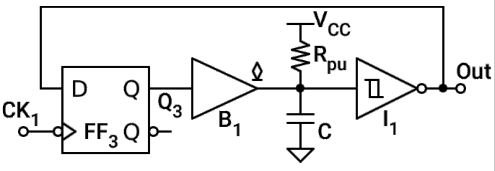

13. Komparator, Schmitt trigger va generatorlar (oscillator)
Bu yerda V∞ = kondensator intilayotgan (lekin hech qachon yetmaydigan) kuchlanish, Vboshi = boshlang'ich kuchlanish, Voxiri = biz kutayotgan kuchlanish. t = shu yo'lni bosib o'tish vaqti.
1. Komparator: chegara bilan solishtirish
Komparator (comparator, "solishtirgich") analog kirish VI ni chegara (threshold) kuchlanishi VS bilan solishtiradi va chiqishda faqat ikki qiymatdan birini beradi: VOH (yuqori, H) yoki VOL (past, L). Ya'ni bu eng oddiy 1 bitli ADC.
- Noninverting (inkor qilmaydigan): VI plyus (+) kirishda. VI > VS → VOH.
- Inverting (inkor qiluvchi): VI minus (−) kirishda. VI > VS → VOL.
Op-amp ni komparator sifatida ochiq zanjirda (teskari aloqasiz) ishlatish mumkin: VO = Ad·Vd, Ad juda katta bo'lgani uchun eng kichik farq ham chiqishni manba chegarasigacha "to'yintiradi" (VOH ≈ musbat manba, VOL ≈ manfiy manba). Maxsus integral komparatorlar esa tezroq va chiqishi ko'pincha open collector (6-darsdagi open-drain kabi).
2. Shovqin muammosi va gisterezis
Haqiqiy signalda doim shovqin (noise, mayda tasodifiy tebranishlar) bor. Signal sekin ko'tarilib chegaraga yaqinlashganda shovqin uni chegaradan bir necha marta u yoqqa-bu yoqqa o'tkazadi, chiqish esa "titraydi". Raqamli sxema buni bir nechta impuls deb qabul qiladi: xato!
Yechim: gisterezis (hysteresis) = ikki xil chegara. Signal ko'tarilayotganda yuqori chegara VS1 da, tushayotganda pastki chegara VS2 da almashadi. Chiqish o'zgargandan keyin chegara "orqaga suriladi", shuning uchun kichik shovqin qayta almashtira olmaydi.
Gisterezisli komparatorning boshqa nomi: Schmitt trigger. Mantiqiy sxemalarda kirishi gisterezisli darvozalar bor (masalan Schmitt trigger inverter), ularning chegaralari qotirilgan va belgisi ichida kichik "gisterezis halqasi" chiziladi.
Chegarani qanday sozlash mumkin
Slayddagi sxema: VI op-amp ning (−) kirishiga, (+) kirish esa VR (tayanch kuchlanish) va VO orasidagi R1–R2 bo'lgichning o'rtasiga (VS) ulanadi. VO dan qaytgan bu musbat teskari aloqa chegarani chiqishga bog'liq qiladi:
VS = VR · R2/(R1 + R2) + VO · R1/(R1 + R2)VO ikki qiymatli → VS ham ikki qiymatli: VO = VOH da VS1, VO = VOL da VS2.
Misol (o'zim tuzgan): VR = 2.5 V, R1 = 1 kΩ, R2 = 9 kΩ, VOH = 5 V, VOL = 0 V. Chegaralar va gisterezis?
Yechim
VS1 = 2.5·0.9 + 5·0.1 = 2.25 + 0.5 = 2.75 V; VS2 = 2.25 + 0 = 2.25 V. Gisterezis = 0.5 V. Shovqin 0.5 V dan kichik bo'lsa, chiqish titramaydi.3. To'rtburchak signal generatori (Schmitt trigger oscillator)
Generator (oscillator) kirish signalisiz o'zi signal yaratadi: takt (clock), test signali va hokazo. Eng oddiysi: bitta Schmitt trigger inverter, bitta R va bitta C.
Qanday ishlaydi (qadam-baqadam):
- Boshida VC past → inverter chiqishi VO = VOH. C R orqali VOH tomon zaryadlanadi, VC eksponensial ko'tariladi.
- VC yuqori chegara VT+ ga yetadi → inverter almashadi: VO = VOL.
- Endi C R orqali VOL tomon razryadlanadi, VC eksponensial tushadi.
- VC pastki chegara VT− ga yetadi → VO yana VOH. 1-qadamga qaytamiz, va hokazo cheksiz.
- Kondensatordagi kuchlanish VC: eksponensial bo'laklar (to'g'ri chiziq ham, to'rtburchak ham emas).
- Inverter (trigger) chiqishi VO: to'rtburchak (square wave).
- VC ning cho'qqidan-cho'qqigacha amplitudasi = ikki chegara orasidagi farq VT+ − VT− (manba kuchlanishi emas!).
- Davr R·C ga proporsional: R yoki C ni 2 baravar oshirsak → davr 2 baravar → chastota 2 baravar kamayadi. Amplituda o'zgarmaydi (u faqat chegaralarga bog'liq).
Davrni hisoblash
Universal formulani ikki bo'lakka qo'llaymiz:
T' (zaryad, VT− → VT+, V∞ = VOH): T' = RC · ln( (VOH − VT−) / (VOH − VT+) ) T'' (razryad, VT+ → VT−, V∞ = VOL): T'' = RC · ln( (VT+ − VOL) / (VT− − VOL) ) T = T' + T'' · f = 1/TBe1, E4 (Clock Generator). Calculate the frequency of the VO square wave. Comparator parameters: VT+ = 2 V, VT− = 1.2 V, VOH = 4.7 V, VOL = 0.3 V. Components: R = 1 kΩ, C = 10 nF.
Yechim
RC = 1 kΩ · 10 nF = 10 µs.T' (zaryad VOH ga): 10 µs · ln( (4.7 − 1.2)/(4.7 − 2) ) = 10 µs · ln(3.5/2.7) = 10 µs · 0.259 = 2.6 µs.
T'' (razryad VOL ga): 10 µs · ln( (2 − 0.3)/(1.2 − 0.3) ) = 10 µs · ln(1.7/0.9) = 10 µs · 0.636 = 6.4 µs.
T = 2.6 + 6.4 = 9 µs → f = 1/9 µs = 111 kHz (slayddagi javob).
Nega T' < T''? Chegaralar (1.2–2 V) VOL ga yaqin, VOH dan uzoq. Zaryadda "itaruvchi" farq katta (≈3 V) → tez; razryadda kichik (≈1 V) → sekin. Shuning uchun to'ldirish koeffitsiyenti (duty cycle) 50 % emas.
Misol (o'zim tuzgan): VOH = 5 V, VOL = 0 V, VT+ = 3 V, VT− = 2 V, R = 10 kΩ, C = 10 nF. f = ?
Yechim
RC = 100 µs. T' = 100·ln(3/2) = 40.5 µs; T'' = 100·ln(3/2) = 40.5 µs (chegaralar o'rtaga simmetrik → 50 % duty cycle). T = 81 µs → f ≈ 12.3 kHz. Agar C = 20 nF bo'lsa: f ≈ 6.2 kHz (2 baravar kam), VC amplitudasi esa baribir 3 − 2 = 1 V.Imtihon savollari
008. In the square wave generator (oscillator) made with a Schmitt trigger inverter, the voltage waveform across the capacitor is: a) exponential b) square wave c) linear d) pulsed
Javob
C R orqali zaryadlanadi/razryadlanadi → (a) exponential.009. In the square wave generator made with a Schmitt trigger inverter, the inverter output voltage is a: a) square wave b) exponential c) pulse d) linear
Javob
Chiqish faqat VOH/VOL → (a) square wave.027. In the square wave generator (oscillator) made with a Schmitt trigger inverter, the voltage wave at the trigger output is: a) exponential b) square wave c) linear d) pulsed
Javob
009 bilan bir xil savol, variantlar tartibi boshqa → (b) square wave. Variant harfini emas, matnini eslab qoling!073. In a Schmitt trigger oscillator, doubling the value of the capacitor: a) doubles the frequency b) halves the amplitude c) halves the frequency d) doubles the amplitude
Javob
T ∝ RC → T 2 baravar → (c) halves the frequency.086. In an oscillator with a Schmitt trigger, if we double the resistor value: a) doubles the frequency b) halves the amplitude c) halves the frequency d) doubles the amplitude
Javob
Xuddi shunday, R ham RC ichida → (c) halves the frequency.083. In the Schmitt trigger oscillator, the peak-to-peak amplitude of the voltage on the capacitor: a) is equal to the supply voltage b) is equal to the distance between the two threshold voltages of the Schmitt trigger gate c) is equal to the largest threshold of the Schmitt trigger gate d) is equal to the smallest threshold of the Schmitt trigger gate
Javob
VC VT− dan VT+ gacha tebranadi → (b).Uchburchak va to'rtburchak generator (077)
Ikki op-amp li generator: biri integrator (kondensatorni doimiy tok bilan zaryadlaydi → kuchlanish to'g'ri chiziq, ya'ni uchburchak), ikkinchisi gisterezisli komparator (to'rtburchak). Uchburchak bir chegaradan ikkinchisiga yetganda komparator almashadi. Qiyalik (slope) = tok/C, ya'ni C ga teskari proporsional. Yarim davr = (chegaralar farqi) / qiyalik → T ∝ C · ΔVth.
077. In a square and triangular wave generator (a circuit with two operational amplifiers), we halve the difference between the comparator thresholds and we double the value of the capacitor. If we do not change any other parameters, then the square wave signal: a) doubles the frequency b) doubles the amplitude and the frequency c) halves the frequency d) does not change the frequency
Javob
Rasmiy yechim: C ni 2 baravar oshirish qiyalikni 2 baravar kamaytiradi, lekin chegaralar farqi ham 2 baravar kichik. Bir chegaradan ikkinchisigacha borish vaqti o'zgarmaydi: 2 · ½ = 1 → (d) does not change the frequency.4. Mashq E3: open-drain + RC + Schmitt trigger halqasi
Be1, E3 (2-qism). Analyze the dynamic behavior of the loop B1 → C → I1 → FF3. Determine maximum fCK1 for RPU = 1 kΩ, C = 25 pF, VCC = 5 V, VS1 = 3 V, VS2 = 2 V. Shu mashqning oldingi qismidagi ma'lumotlar: FF lar: tSU = 3 ns, tCKQ = 5 ns; I1 (Schmitt inverter): tLH = 3 ns, tHL = 4 ns; B1 (open-drain bufer, RON = 40 Ω): tP = 6 ns.

Yechim
Sxemani tushunamiz. B1 open-drain: chiqishi yo yerga ulanadi (RON = 40 Ω orqali), yo "uziladi" (yuqori impedans). Uzilganda C faqat RPU = 1 kΩ orqali VCC ga zaryadlanadi. Demak:
- VC tushishi (razryad, 40 Ω orqali): τ = 40 Ω · 25 pF = 1 ns → juda tez.
- VC ko'tarilishi (zaryad, 1 kΩ orqali): τ = 1 kΩ · 25 pF = 25 ns → sekin. Eng yomon holat shu.
Zaryad vaqti. VC 0 V dan boshlab VCC = 5 V ga intiladi; I1 almashishi uchun yuqori chegara VS1 = 3 V ga yetishi kerak:
t_CLH = RPU·C · ln( (5 − 0)/(5 − 3) ) = 25 ns · ln 2.5 = 22.91 nsHalqa bo'ylab hammasini qo'shamiz (8-darsdagi Fmax mantiqi): FF3 clock → Q3 (tCKQ), B1 kechikishi, RC zaryadi, I1 (VC ko'tarilsa Out tushadi → tHL), FF3 setup:
TCKmin = 5 + 6 + 22.91 + 4 + 3 = 40.91 ns → FCKmax = 1/40.91 ns = 24.4 MHzJavob slayd bilan bir xil: 24.4 MHz. Xulosa: sekin RC zaryadi butun kechikishning yarmidan ko'pi. Tezlatish uchun RPU ni kamaytirish kerak (lekin u holda tok va quvvat oshadi).
5. Monostabil (bitta impuls generatori)
Monostabil (monostable, one-shot): faqat bitta barqaror holati bor. Tashqi buyruq (trigger, masalan L→H fronti) kelganda boshqa holatga o'tadi va W vaqtdan keyin o'zi qaytadi. Natija: davomiyligi aniq bitta impuls.
- Re-triggerable: impuls davomida yangi trigger kelsa, vaqt qaytadan hisoblanadi (impuls uzayadi).
- Non re-triggerable: impuls davomida yangi triggerlarni e'tiborsiz qoldiradi.
- Recovery time: barqaror holatga qaytgandan keyin yangi triggerni qabul qilishdan oldingi minimal kutish vaqti; undan oldin impuls davomiyligi noto'g'ri bo'lishi mumkin.
Eng oddiy monostabil: RC yuqori chastota filtri (C ketma-ket, R yerga) + chegara VT li darvoza. VI sakraganda VO darhol VH ga sakraydi (kondensator kuchlanishi bir zumda o'zgarmaydi), keyin eksponensial 0 ga tushadi:
Kamchiligi: agar VI ning H holati T dan qisqa (T' < T) bo'lsa, impuls ham qisqa (T') chiqadi.
Misol (o'zim tuzgan): R = 10 kΩ, C = 1 nF, VH = 5 V, VT = 2.5 V. Impuls davomiyligi?
Yechim
τ = 10 µs; T = 10 µs · ln(5/2.5) = 10 µs · 0.693 = 6.93 µs.6. Sinus generatorlari va kvars
- Talablar: juda aniq chastota, barqarorlik, kichik buzilish (distortion).
- Tuzilishi: kuchaytirgich + musbat teskari aloqa + chastotaga kuchli bog'liq zanjir: RC ko'prik (Wien bridge), RC zinapoya, LC rezonans konturi yoki pyezoelektrik kristall.
- Pyezoelektrik material: mexanik bosim → kuchlanish va aksincha. Kvars kristali juda yaxshi rezonator: qaytarilgan energiya / yo'qotilgan energiya nisbati juda katta → chastota juda aniq va barqaror. Shuning uchun deyarli barcha takt generatorlari kvarsli.
- Mustaqil ikki generator hech qachon sinxron bo'lmaydi. Sinxronlash uchun PLL (Phase Locked Loop, fazani ushlab turuvchi halqa) yoki sinxron bo'luvchilar ishlatiladi. Sinxronlash flip-flop larning metastabilligini oldini oladi.
- VCO (voltage controlled oscillator): chastotasi kirish kuchlanishi bilan boshqariladigan generator.
O'zingizni tekshiring
Javob
Shovqinli, sekin o'zgaruvchi signal bitta chegarani bir necha marta kesib o'tadi va chiqish titraydi. Ikki chegara (gisterezis) bo'lsa, shovqin chegaralar farqidan kichik ekan, chiqish faqat bir marta almashadi.Javob
RC 2 baravar → T' = 5.2 µs, T'' = 12.7 µs, T ≈ 17.9 µs → f ≈ 55.8 kHz.Javob
3.5 − 1.5 = 2 V (manba kuchlanishi 5 V emas).Javob
t = 12.5 ns · ln 2.5 = 11.45 ns; T = 5 + 6 + 11.45 + 4 + 3 = 29.45 ns → ≈ 34 MHz.Javob
Qiyalik 2 baravar kam, yo'l bir xil → vaqt 2 baravar → chastota 2 baravar kamayadi.Javob
Re-triggerable: impuls davomida kelgan trigger vaqtni qayta boshlaydi. Non re-triggerable: impuls davomida triggerlarni sezmaydi.Yangi atamalar
| Atama | Inglizchasi | Ma'nosi |
|---|---|---|
| Komparator | (threshold) comparator | Kirishni chegara bilan solishtirib H/L beradi |
| Chegara | threshold | Chiqish almashadigan kuchlanish |
| Noninverting / inverting | — | VI > VS da VOH / VOL |
| Shovqin | noise | Signaldagi mayda tasodifiy tebranishlar |
| Gisterezis | hysteresis | Ko'tarilish va tushish uchun ikki xil chegara |
| Schmitt trigger | Schmitt trigger | Gisterezisli komparator / darvoza |
| Musbat teskari aloqa | positive feedback | Chiqish kirishni o'sha tomonga yanada itaradi |
| Generator | oscillator | Kirishsiz o'zi signal yaratadigan sxema |
| To'rtburchak signal | square wave | Faqat ikki qiymatli, sakrab almashadigan signal |
| To'ldirish koeffitsiyenti | duty cycle | Davrning H holatdagi ulushi |
| Integrator | integrator | Doimiy tok bilan C ni zaryadlab to'g'ri chiziq (uchburchak) beradi |
| Monostabil | monostable, one-shot | Trigger kelganda bitta aniq uzunlikdagi impuls |
| Kvars, pyezoelektrik | quartz, piezoelectric | Mexanik rezonans → juda aniq chastota |
| PLL / VCO | phase locked loop / voltage controlled oscillator | Generatorlarni sinxronlash / kuchlanish bilan boshqariladigan generator |
📝 Konspekt (daftarga yozib oling)
- Komparator = 1 bitli ADC. Noninverting: VI > VS → H. Inverting: VI > VS → L.
- Gisterezis (Schmitt trigger) = ikki chegara VS1 > VS2; shovqinda chiqish titramaydi. Chegara musbat teskari aloqa bilan yasaladi.
- Schmitt generatori: VC = eksponensial, VO = to'rtburchak, VC amplitudasi = chegaralar farqi, f ∝ 1/(RC): R yoki C 2× → f ½.
- Uchburchak generatori: T ∝ C · ΔVth (077: 2C va ½ΔVth → f o'zgarmaydi).
- Open-drain + RPU: eng sekini RPU orqali zaryad (E3: 22.91 ns, 24.4 MHz). E4: 2.6 + 6.4 = 9 µs → 111 kHz.
- Sinus: kuchaytirgich + musbat teskari aloqa + RC/LC/kvars; kvars eng aniq. Sinxronlash: PLL.
- Javoblar: 008 a; 009 a; 027 b; 073 c; 086 c; 083 b; 077 d.